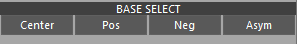
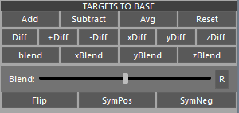
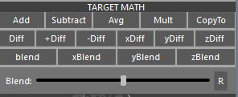
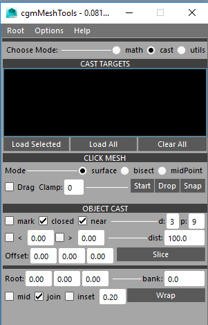

Mesh Tools¶
Status: 1.0 Release - Fall 2016
Last update: 08.17.2017
Overview¶
MeshTools are a collection of tools to work with geo (poly or nurbs(for some)). You can find a detailed breakdown on the sections in the links provided.
Core Modules
Main modules this tool is using for those wanting to dig in.
cgm.core.lib.geo_Utilscgm.core.classes.DraggerContextFactorycgm.core.lib.shapeCastercgm.core.lib.rayCaster
Accessing¶
- Top cgm menu -
CGM > TD > Mesh > cgmMeshTools - Toolbox -
TD Tab> Rigging > Mesh > MeshTools - Python
import cgm.core.tools.meshTools as MESHTOOLS
MESHTOOLS.go()
If you open the ui, you should see something like this:

It's divided into three modes: Math, Cast, Utils
Tip
- Previous selections are remembered for subsequent processes if possible
- From/to selection is typical.
Menu¶
The top menu is where we set our options and get help
Options¶

Space- xform space for mesh math functionsCreate- click Mesh create optionsSym Axis- axis to measure symetry fromLathe Axis- curve casting lathe axisAim Axis- object aim axis for shooting raysObj Up Axis- object up axis for casting curves (lolipop for example)Extend Mode- extend mode for how curves are wrapped
Math¶
The math section is about using the positional data to do math functions similar to other deformers like blendshapes.

Until we get embeded video sorted. Please use this link: https://player.vimeo.com/video/183549761
Tip
- Most math functions now work with soft selection evaluation
- The space section of the options menu affects math functions.
Base Object¶

Base [ ]- Text field that displays the base object when loaded<<- Loads a selected mesh as a base. It is then processed for it's symmetry dictReprocess- Recheck the symmetry of a base object to see if you've resolved itReport- Tells how many asymetrical verts there aresymMode- specify which point to base symmetry calculation fromTolerance- How close of a tolerance symmetry should be calculated tox- Value to multiply calculations from on the various buttonssym- Sym axis to measure symetry fromresult- Specify how the result should be usedNew- Create a new meshModify- modify the targetValues- report values
Base Select¶
Various methods of selecting helpful bits on the base..
Center- select the base center vertsPos- select the base positive vertsNeg- select the base negative vertsAsym- select the asymetrical verts (if there are some)
Target Select¶
Same as before but on selected target geo.

Center- select a target's center vertsPos- select the target's positive vertsNeg- select the targets negative vertsCheck Sym- select the target's asymetrical verts (if there are any)Select Mirror- selected the mirrored verts of those selectedSelect Moved- selected the moved verts of the selected objects relative to the base
Targets To Base¶
Functions cast in relation to the base on selected objects. Cumulative effect.
Note
* marks math functions that don't work with soft selection yet
Add- base + target * multiplierSubtract- base - target * multiplierAverage- average(base,target) * multiplierReset- Reset to baseDiff- delta of base - target+Diff- base + (delta * multiplier)-Diff- base - (delta * multiplier). This is what you'd use for 'adding' deltasxDiff- x deltayDiff- y deltazDiff- z deltaBlend- acts like a blendshape with multiplier being the weight valuexBlend- x only blendshapeyBlend- y only blendshapezBlend- z only blendshape
Blend Slider - slider creation of blend
Flip* - Flip the shape across the axisSymPos* - Mirror the positive sideSymNeg* - Mirror the negative side
Target Math¶
Functions cast on selected objects. Cumulative effect. Last object is treated as the base (except for copyTo). See previous section for more details.
Cast¶
This was our intial pass on rayCasting with geo in a ui form.

Until we get embeded video sorted. Please use this link: https://player.vimeo.com/video/183556460
Cast Targets¶

This is where we load our targets to cast if we want to be specific. If no targets are specified, all mesh and nurbs surface objects in scene will be used.
Load Field - Multi select ability enabled. Displays loaded names and mesh types.
Popup - loads on right click on an item
Select- handy if you have a big scene and aren't sure where an item isRemove SelectedRemove Non-selected
Load Selected- Load selected objectsLoad all- Load all eligible targets (geo or nurbs)Clear all- Clear this. When clear, ALL eligible targets will be used.
Click Mesh¶
For most things toolbox section is probably more intutive except for shapeCasting which it doesn't do.

Mode -
Surface- first hitbisect- Piercing cast or all hitsmidPoint- Mid point of hits
[ ] Drag- When checked, rays are cast as long as you clickClamp[ 0 ]- Clamp the number of hitsStart- Start the toolDrop- Force the tool to drop and create non locator objectsSnap- Snap selected objects to cast point based on setting providedCreate- (Options Menu) - What to create for click mesh when tool is released.- Options: locator,joint,jointChain,curve,follicle,group
Object Cast¶
This is a two part section. Most of the options in the slice section affect the wrap section as well. The general theory is that rays are cast from a given object in order to create curves. To my mind I think of the death blossom from the 80's flick the Last Starfighter spinning around around shooting rays. Works off a given selection of objects and uses the cast targets specified or all if none are.

Slice¶
A slice is a single curve lathe.
Options - Accessed via the options menu
Lathe Axis- curve casting lathe axisAim Axis- object aim axis for shooting rays[] mark- Mark hits. Useful for troubleshooting and using data for other bits.[] closed- Create closed curve[] near- Use the nearest hit or use the farthest hitd [3]- The degree of the curve to create. 1 is linear.p [9]- Points - Number of rays to cast which translates to points of the curve[] < [0.0]- Min Range (with toggle) - Specify range of an angle to cast[] > [0.0]- Max Range (with toggle) - Specify range of an angle to castdist- Distance - Range which to cast our raysOffset: [0.0] [0.0] [0.0]- Offset - Offset of a hit to further process. Use z to push out from the surfaceSlice- Make your mesh curve slice
Wrap¶
A wrap is a more complicated lathe often with more than one cast point.
Options - Accessed via the options menu
``Obj Up Axis `` - object up axis for casting curves (lolipop for example)
Extend Mode- extend mode for how curves are wrappedSegment- cylider between two pointsradial- single radial cast like the rings of Saturndisc-cylinder-loliwrap-endCap- most often used for things like finger tips
Root: [0.0] [0.0] [0.0]- Root Offset - Offset for our root cast object. May be pulling this from gui call.bank: [0.0]- Bank - Bake for cast object. May be pulling this from gui call.[] mid- Mid mesh cast. May be pulling this from gui call.[] join- Join cast curves. Only used in certain modes.[] Inset [ 0.2]- Inset multplier. Only used with certain modes.Wrap - Make your mesh wrap
Utils¶

Until we get embeded video sorted. Please use this link: https://player.vimeo.com/video/183669485

Proximity Query¶
Create proxi geometry based on a from to selection.
* Expand - Mode by which to expand the found selection.
None-Grow- Grow selection by amount specifiedSoft Select [0.0]- Use soft select to grow by amount specified
Result- What kind of data we want from our processing.objsfaceedgevtxmesh- create a proximesh
Mode-Ray Cast- Use ray casting to check for precisnessBounding Box- Use the much faster bounding box check
Go- Process